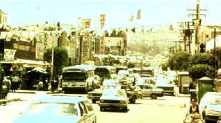

| Traffic/A,A |
| USA/2000/147/ANA 1.85 |
I watched Traffic the other eve. It’s absolutely brilliant filmmaking. Soderbergh makes all the right choices. I wonder if the original script was as heavily cross-cut as the final film winds up being? I rather doubt it. Soderbergh is truly a professional on a hot streak. Every cut at the ball is a home run. Following the success of Out of Sight, The Limey and Erin Brockovich, Traffic continues the string of brilliance. The fact that Soderbergh chose to be director of photography and camera operator on Traffic as well translates into an extraordinarily personal vision and style. The man has the rhythm. Traffic moves like a dancer enjoying his moves on the dance floor, rather oblivious to the fascinated fellow dancers who have stopped to watch the magnificent show of dance floor grace.
 |
| The Tijuana palette. ©USA |
The trifurcated structure of Traffic works to a tee,
but Soderbergh’s choice of distinctly different chromatic schemes for each section enhancing the
work beyond adequate description. Traffic traces three points of the drug trade. The Mexican
segment follows a pair of honest cops seeking to stem the tide of the river of drugs traveling over
the border into the United States. Javier Rodriguez anchors this beautifully realized segment. Int
he meantime, Point two follows Judge Robert Wakefield as the newly appointed U.S. Federal
Drug Czar with a mission to stamp out the rampant spread of drugs into the country. The Mexican
drug cartels become his target. This segment bifurcates to include Wakefield drug problems
discovered at home. Meanwhile, point three evolves in San Diego: a covert drug op led by Federal
Agent Montel Gordon results in cartel employee Eduardo Ruiz turning informer on a leading San Diego
light Carlos Ayala. His wife Helena must find a way to survive as the government builds the case
against her husband.
To be sure, Traffic is not perfect. Some of the shorthand story
telling makes character swings questionable in some cases and character actions hard to believe in
other instances. Sophisticated Judge Wakefield would not be so reckless in some of his actions.
There are far more logical and prudent steps that could be taken which would play closer to the
essence of the developed character. Do we have enough indication in the early Helena Ayala scenes
of what the women is made of and how far she is capable of going? But the ferocity and flow of the
storytelling makes it easy to forgive small trespasses. I never feel cheated by anywhere Traffic
chooses to go.
Benicio Del Toro wins the Best Supporting Actor Oscar© for Traffic. De
Toro is superb, no doubt about it, but he sure is no supporting actor in Traffic. If
anyone's a star in this vehicle, it's Del Toro. Oh, well, Hollywood. But Del Toro's isn't the only
acting that shines in Traffic. Soderbergh is proving adept at maximizing acting performances.
Michael Douglas turns in a fine performance as Judge Wakefield. Douglas carries himself with
dignity, proves himself a able listener as an actor and a character. Catherine Zeta-Jones is fine
as Helena, but puffed up and pregnant she leaves some of her screen appeal off the table. Don
Cheadle plays it like a poor man's Wesley Snipes while Luis Guzman is a bit more over the top than
I expect from the veteran character actor. Miquel Ferrer is confidently sleazy as Eduardo Ruiz,star
witness in the Ayala drug bust. Tomas Milian is brilliantly frightening as General
Salazar.
Traffic transfers to DVD with amazing beauty. I find it easy to believe
that Steven Soderbergh, a sophisticated video man, would be one hundred percent pleased by the
treatment afforded Traffic by USA films. No edge enhancement yet sharp as can be. Lighting
is fully respected in every circumstance, grain, contrast, brightness levels meticulously adhere to
the creative vision. Color saturation again walks a refined artistic balance board. The Dolby
Digital 5:1 treats Cliff Martinez's score with respect. Included with the feature is an 18
minute Behind the Scenes short.
What can I say? Don’t miss out on this searing and effectively original
American film

The Movie Poster Archive includes extensive poster images from the films of stars like Susan Hayward, Kirk Douglas, Katharine Hepburn and many more. Our featured star is Kirk Douglas.

Selections from the Feature Archive
include articles on Akira Kurosawa, Frank
Darabont, Blonde Bimbos, Hollywood Street Gangs, or Vietnam: The
Hollywood Pariah, and many more....
Film noir: The phrase hangs awkwardly on the tongue,
shadowy images peek out from behind half-closed doors. Click on the Noir and Noir
Again symbol for a look into the dark spaces of Hollywood's revisiting of film noir.

ISF Monitor Calibrations in the
Tristate New York area. Lots of hardware info and frequent hardware peaks from video expert Kevin
Miller.
. Have you visited Home Theater Talk lately? One of the friendliest places on
the Net for Home Theater and DVD discussion, you can get help for installation problems or simply
share your opinions with other Vidiots.
Have you visited Home Theater Talk lately? One of the friendliest places on
the Net for Home Theater and DVD discussion, you can get help for installation problems or simply
share your opinions with other Vidiots.
 Kinoeye Archive
Kinoeye Archive
This is a resource of all content-rich
materials on the web relating to Central and East European cinema. The ultimate aim of the Kinoeye
Archive is to provide a near-as-damn-it definitive index of intelligent and thoughtful
English-language analysis of Central and Eastern European cinema on the web.
 Gary Morris's insightful
publication Bright Lights Film Journal turns the celluloid in films from a unique
perspective. Click on the image above for more pure movie views.
Gary Morris's insightful
publication Bright Lights Film Journal turns the celluloid in films from a unique
perspective. Click on the image above for more pure movie views.